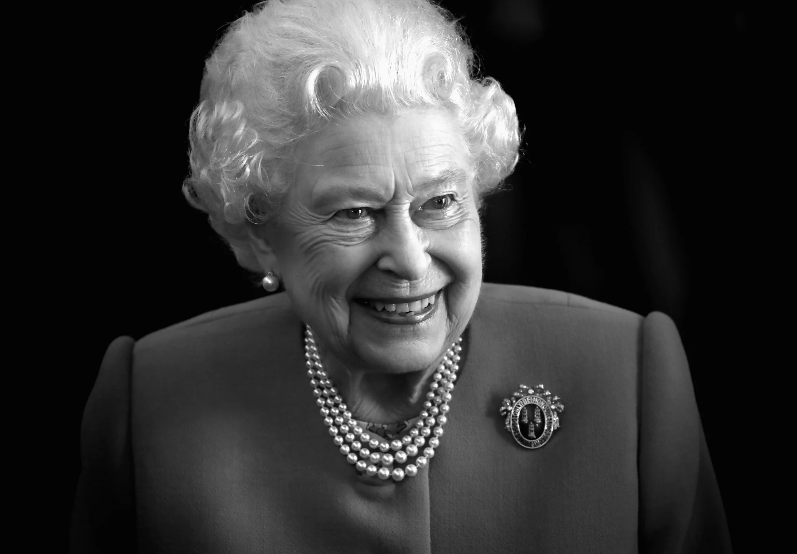

Trubite of Queen Elizathe
the great memorial of Queen

the great history and trubite of our Queen Elizathe II
Here Some Great story of the Queen
- Elizabeth II - (Elizabeth Alexandra Mary; 21 April 1926 , 8 September 2022)
-
During - her grandfather's reign, Elizabeth was third in the line of succession to the British throne,
behind her uncle Edward and her father. Although her birth generated public interest, she was not expected
to become queen,
-
In September 1939 - Britain entered the Second World War.
Lord Hailsham suggested that Princesses Elizabeth and Margaret should be evacuated to Canada to avoid the frequent
-
Elizabeth - met her future husband, Prince Philip of Greece and Denmark, in 1934 and again in 1937.[41]
They were second cousins once removed through King Christian IX of Denmark and third cousins through
Queen Victoria.
-
Elizabeth The Commonwealth, explained.Subscribe and turn on notifications so you don't miss any Information
The one and only thimg I've saved, when Queen Elizabeth was in life is that she the one great Queen of all time right
and if you need more click this
here